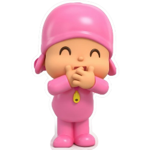
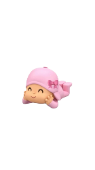
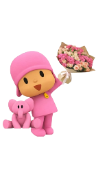
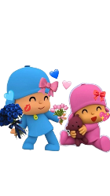
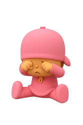

ada surat kecil dari tika nihh buat kamuuu. jangan lupa dibaca sampai selesai yaa, karena ada sedikit rasa sayang yang tika titipin di dalamnya hehe 💗


halooo, pekerja keras kesayangannnkuu!! hari ini gimanaa? kerjaannya lancar nggak? ada yang bikin kesel atau justru ada hal seru yang terjadi? hehe. semoga mood kamu hari ini bagus yaa. kalau belum, semoga pesan kecil dari tika bisa jadi salah satu alasan kamu senyum hari iniii 💗

sekarang ada pesan kecil dari tika buat kamuuu! 💌 janji yaa, setelah baca ini capeknya reda sedikit, mood-nya jadi lebih baik, dan senyumnya balik lagiii hehe 🤍
sayanggg, tika ngerti kok kalau sekarang kamu lagi capek, banyak pikiran, atau mungkin lagi pengen punya waktu buat diri sendiri. jadi nggak apa-apa yaa, kamu istirahat dulu, tenangin pikiran kamu, dan lakuin hal-hal yang bisa bikin kamu merasa lebih baik. tika nggak mau kamu ngerasa harus selalu punya energi buat semuanya. kamu juga harus disayang dan dijaga, termasuk sama diri kamu sendiri 🤍
tika cuma mau kamu tau kalau kamu nggak harus selalu jadi orang yang kuat. kalau lagi capek, istirahat ajaa, kalau lagi nggak baik-baik aja, nggak perlu pura-pura. mungkin tika nggak selalu bisa menyelesaikan semua hal yang lagi kamu hadapin, tapi tika selalu pengen jadi seseorang yang bisa kamu datangi saat dunia terasa berat. tika bersyukur banget bisa punya kamu di hidup tika, terima kasih yaa sudah hadir, sudah menemani, dan sudah memberikan banyak kebahagiaan buat perempuan ini.
tika masih punya banyak hal lucu dan menyenangkan yang pengen dilakuin bareng kamu. masih pengen ketawa bareng, cerita hal-hal random, jalan-jalan, nyobain makanan enak, dan bikin banyak kenangan baru sama kamu. tika juga berharap kamu masih bisa melihat perempuan ini, yang dari dulu selalu berusaha ada di setiap susah dan senangnya kamu, yang selalu bangga sama setiap proses kamu, yang selalu mendukung kamu sampai sejauh ini, dan yang masih ingin melihat kamu tumbuh menjadi versi terbaik dari diri kamu.
maaf yaa kalau terkadang perkataan atau sikap tika bikin kamu tambah capek. tika juga masih belajar buat jadi pasangan yang lebih baik. tapi satu hal yang perlu kamu tau, tika nggak pernah menyesal sudah mengenal dan menyayangi kamu. terima kasih sudah menjadi bagian dari hidup tika yaa, sayang. sekarang jangan lupa makan yang cukup, istirahat yang banyak, dan jangan terlalu keras sama diri sendiri. semoga hari-hari kamu ke depannya dipenuhi lebih banyak hal baik dan alasan untuk tersenyum. tika kirim peluk jauhhh buat kamu. love youu, my favorite person!! 🤍🫂

makasih yaaa udah baca sampai selesai!! semoga mood kamu jadi lebih baik. kalau udah merasa baikan, chat or call me yaa sayanggg. take your time, big hug for youu!! 🫂🤍